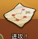
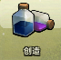
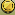
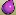
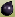
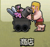
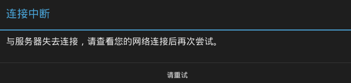
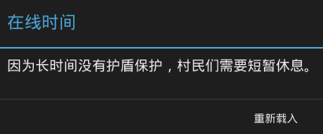
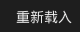

# COC Auto Farm Script def farm(): r.click() r.click() def trainTroops(): r.click() r.click() trainBar = Pattern() goblin = Pattern() Settings.MoveMouseDelay = 0.01 r.click(trainBar.targetOffset(140, 225)) for i in range(10): r.click(goblin) r.click(trainBar.targetOffset(200, 225)) for i in range(10): r.click(goblin) r.click(trainBar.targetOffset(260, 225)) for i in range(10): r.click(goblin) r.click(trainBar.targetOffset(320, 225)) for i in range(10): r.click(goblin) r.click() return def farm(): pass def collect(): r.setAutoWaitTimeout(0.1) golds = r.findAll(Pattern().similar(0.55)) if golds: for g in golds: r.click(g) elixirs = r.findAll() if elixirs: for e in elixirs: r.click(e) darkElixirs = r.findAll(Pattern().similar(0.80)) reDarkElixirs = r.findAll(Pattern().similar(0.80).targetOffset(10,-2)) if darkElixirs: for d in darkElixirs: r.click(d) def startCOC(): r.setAutoWaitTimeout(1) if r.exists(): r.click() if r.wait(): Debug.log("COCO Started") return True else: if r.exists(): r.click() if r.exists(): r.click() return False def start(): startFlag = False startCount = 0 while not startFlag: startFlag = startCOC() startCount += 1 if startCount == 10: break return startFlag if __name__ == '__main__': # popup("Please start COC in BlueStacks.\nZoom out as far as possible.") switchApp("BlueStacks") r = Region(App.focusedWindow()) r.setFindFailedResponse(SKIP) if start(): collect() # trainTroops() exit()